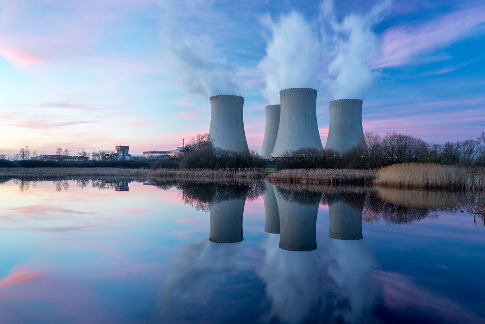

Kernenergie
Uit uranium kan elektriciteit opgewekt worden: kernenergie. Daarbij komt netto 10 tot 100 keer minder CO2 vrij, dan bij energieopwekking uit fossiele brandstoffen. Dat is ongeveer evenveel als bij elektriciteitsproductie uit wind, water en zon. Maar de meningen over kernenergie lopen sterk uit een.
Voordelen van Kernenergie
- Bij de opwekking van kernenergie komen nagenoeg geen CO2 en andere broeikasgassen vrij.
- Als grondstof is uranium relatief goedkoop.
- Voor kernenergie zijn we minder afhankelijk van politiek instabiele regio's, dan voor gebruik van olie en gas. Uranium komt over de hele wereld voor in rotsen, bodem en zeewater.
Nadelen van Kernenergie
- Het grootste nadeel van kernenergie is het radioactieve afval uit een centrale, maar ook het afval van uraniumwinning en het sloopafval na sluiting van een kerncentrale zijn radioactief. Radioactieve straling vormt een groot risico voor de gezondheid. Hoogactief radioactief afval blijft tienduizenden jaren straling afgeven en vormt zo een risico voor duizenden generaties na de onze. Daar is op dit moment geen goede definitieve opslag voor.
- De kans op een ernstig ongeval is weliswaar klein, maar de mogelijke gevolgen zijn groot. Het gaat dan vooral om nadelige gevolgen op lange termijn door verhoogde stralingsniveaus.
- De bouw van een kerncentrale is erg duur (miljarden euro’s), net als het slopen (ontmantelen).
- Kerncentrales en fabrieken die kernafval verwerken vormen een risico voor misbruik. Ze kunnen geschikt worden gemaakt voor de productie van kernwapens.